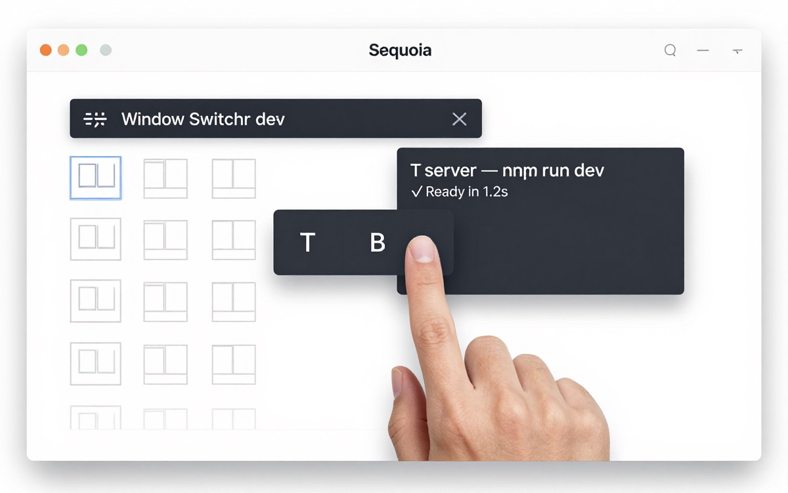
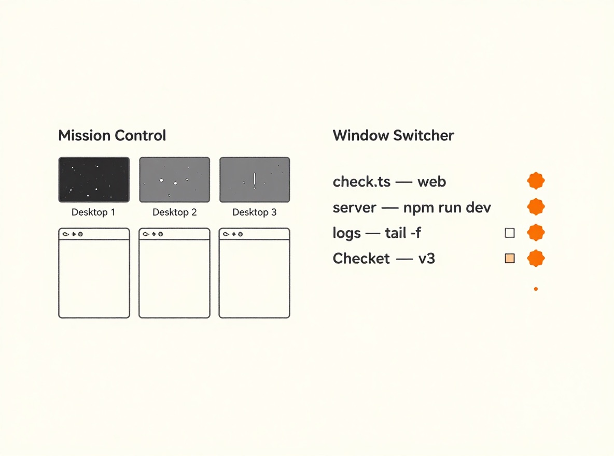
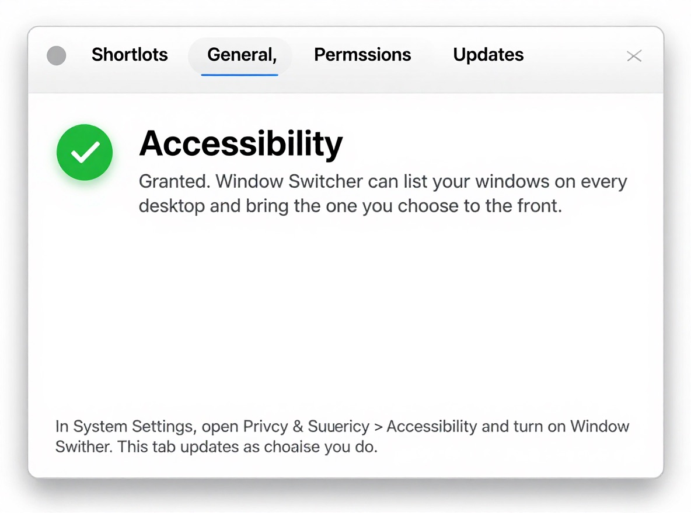

Features / Every Space
Every SpaceEvery desktop's windows, in one list.
Windows on other desktops and in full-screen apps are listed by title, right next to the ones in front of you. Press a window's keys and macOS takes you to its Space.
● No swiping through desktops to find it
Pick the window. macOS brings you to it.
Choose a window on another desktop and macOS switches to that Space with the window in front. It's the same two keys as a window right beside you.
- Every desktop is listed. Not just the one you're on.
- Full-screen apps too. A window in its own full-screen Space is one more line in the list.
- The exact window comes forward. Not just its app.

AI draft · replaceTitles beat thumbnails.
Mission Control shows the current desktop's windows and the other Spaces as small thumbnails along the top. ⌃← and ⌃→ step through Spaces one at a time. Window Switcher lists every window on every Space by name, so you read it instead of hunting for it.
- Real names. "server — npm run dev", not a tiny dark rectangle.
- No guessing which desktop. The ⧉ mark tells you a window is elsewhere.
- Same keys wherever it lives. Move a window to another desktop and its letter doesn't change.

AI draft · replaceAccessibility lets it see your windows.
Window Switcher asks for Accessibility to list and switch windows. It doesn't need Screen Recording, because it reads titles, not pixels. Without Accessibility, the switcher still lists and switches apps.

AI draft · replaceNothing to set.
Every Space is always included once Accessibility is on. You turn it on in System Settings → Privacy & Security → Accessibility, and Settings → Permissions takes you there.
Good to know.
Does it show full-screen apps?
Yes. Windows in full-screen Spaces are listed with everything else. Choose one and macOS switches to it.
Do I need to set up my Spaces in a special way?
No. Use desktops however you like. Window Switcher finds windows wherever they are.
Why does it need Accessibility?
That's how macOS lets an app see other apps' windows and bring one to the front. Without it you still get every app with its key, just not its windows.
Does it need Screen Recording?
No. It lists windows by title and never reads what's on screen.
Press ⌥⇥. Then the next key you want.
Free for the Mac. No account, nothing running in the background, and every app has a key the moment it's installed.
Download Window Switcher for Mac